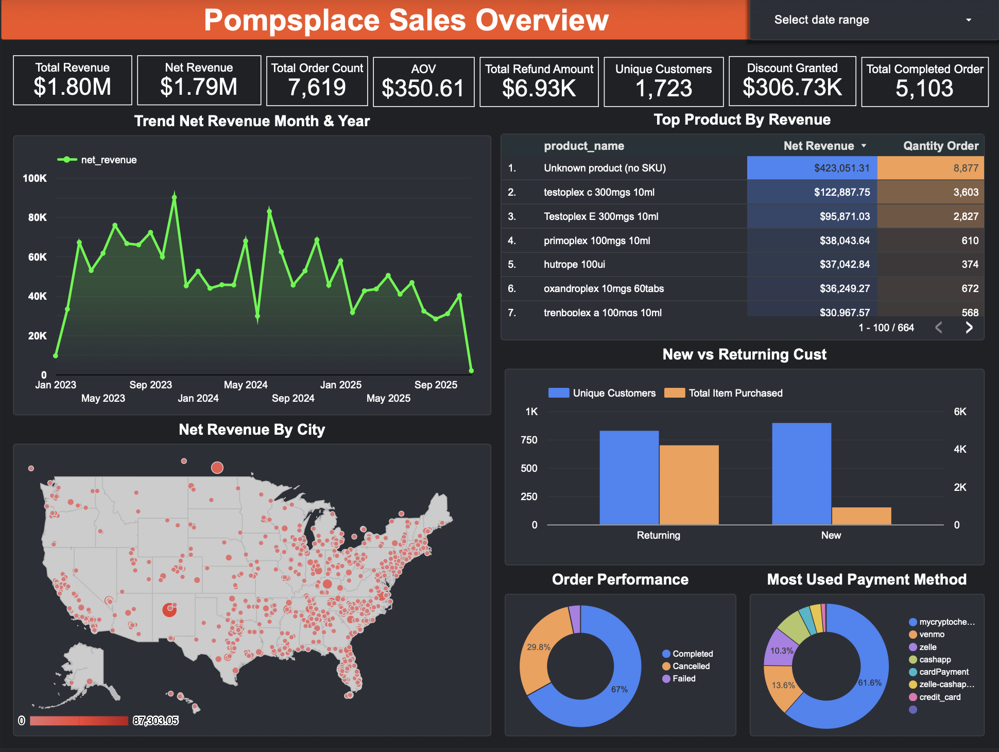
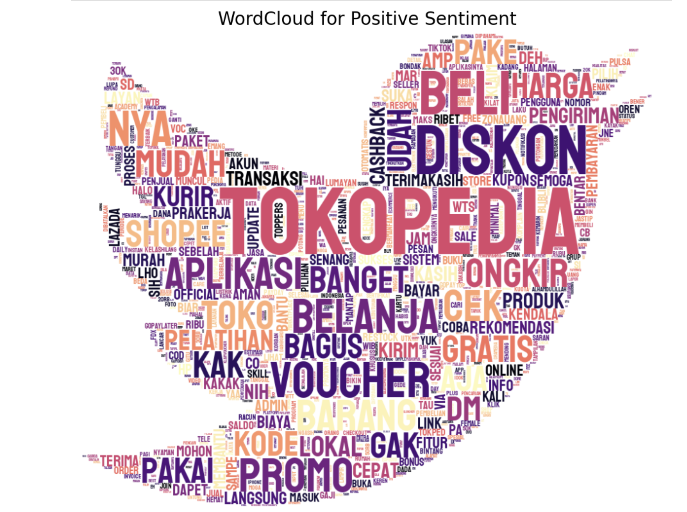
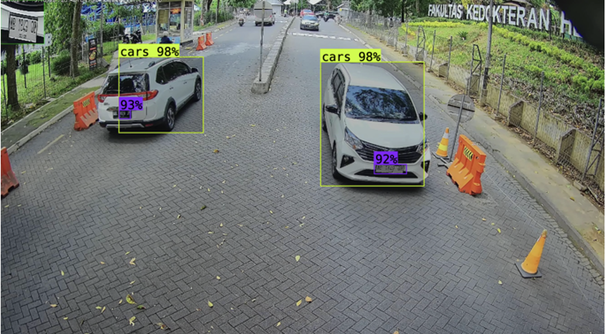
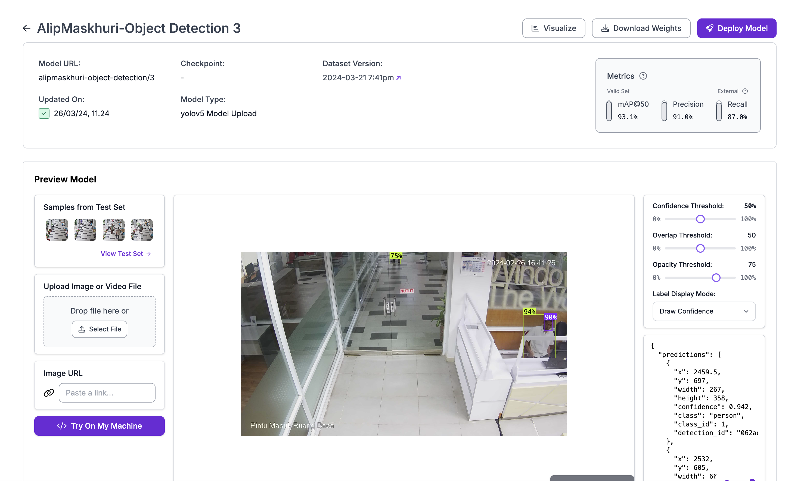
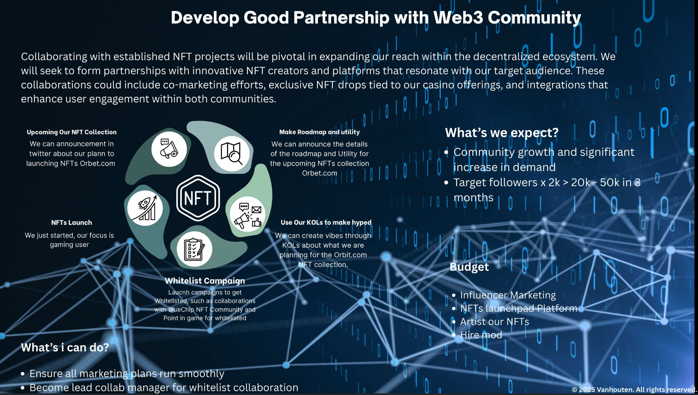

Portfolio
Selected projects showcasing hands-on experience in machine learning, data analysis, computer vision, and Web3 community growth.
- All
- Machine Learning
- Data Analysis
- Web3

{kind=link}
Sales Data Visualization PompPlace
Data analysis project for sales overview, trend analysis, and strategic planning.

{kind=link}
Sentiment Analysis Tokopedia Using CNN
Machine learning model for classifying user sentiment on e-commerce reviews using Convolutional Neural Network.

{kind=link}
Cars Detection Using YOLO v5
Real-time object detection model for vehicles and license plates in CCTV footage using YOLOv5.

Preeklamsia Detection Using XGBoost
Health prediction model for detecting preeclampsia risk in pregnant women using XGBoost algorithm.

{kind=link}
Object Detection
Custom trained model for detecting various objects in images using Roboflow platform and YOLO architecture.

{kind=link}
Business Development Web3
Strategies for NFT/token projects, KOL partnerships, and community growth in blockchain ecosystems.